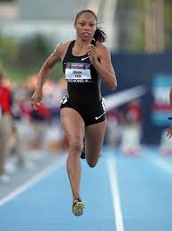
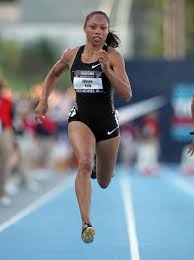

Sprinting is running over a short distance in a limited period of time. It is used in many sports typically as a way of quickly reaching a target or goal, or avoiding or catching an opponent.In track and field, sprints (or dashes) are races over short distances.
 
Home

Home